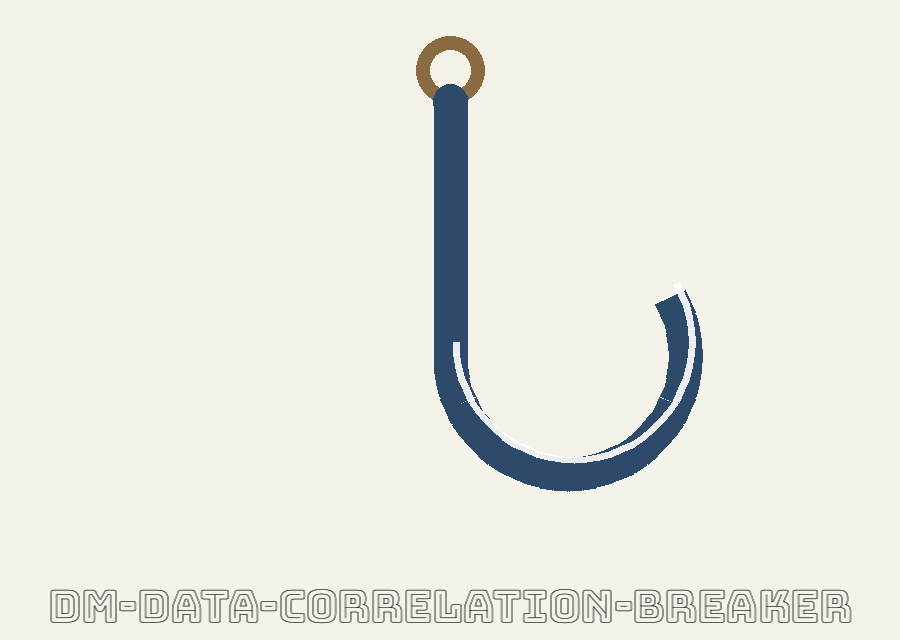
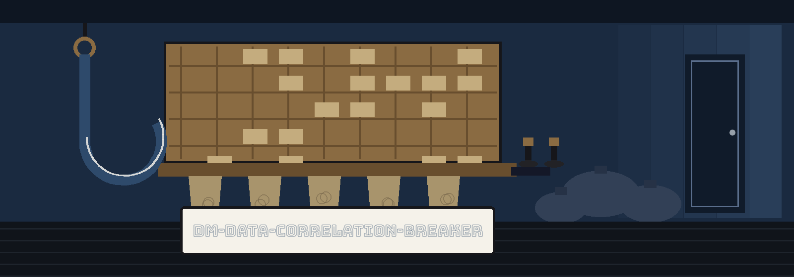

dm-data-correlation-breaker: The Night Sort at the Railway Mail Car
dm-data-correlation-breaker: The Night Sort at the Railway Mail Car names itself in that form throughout this page. The page is laid out as a sorting case: white ground, pale oak panels, headings in carbon blue, and one plate per pigeonhole row. The mail hook marks each plate the way it marks chapters in the README.


Links That Should Not Hold
Output Is Never Input
Numbers Stay Numbers
Same Seed, Same Bytes
Plate one: mission
Masked figures can still gossip about each other. Points nobody would connect in isolation drift in tandem, and tandem drift betrays. The program hunts those quiet couplings among apparent strangers and snaps them with planted errors or variations, after which the coupling carries no weight. It sits with kin that manufacture or mask sensitive data, believable at a glance and meaningless on inspection.
Plate two: acquisition
git clone https://github.com/ShadowGuardAI/dm-data-correlation-breaker
Side note, flagged and uncorrected in place: the clone line above is reproduced to the letter from the README, and the organisation in it is spelled without a hyphen. The restored spelling carries a hyphen. The fault is itemised under Spelling faults in the paperwork in the generation record, and it is repaired nowhere on this page.
Plate three: controls
Invocation shape: ./dm-data-correlation-breaker [params]. Bare bones: program name, parameters, end of story. The dials follow in README sequence, one row each.
| Dial | What it does |
|---|---|
| -h | Show help message and exit. Help heads the list, mirroring print. |
| --input | Path to the input CSV file. |
| --columns | Comma-separated list of column names to process. |
| --error-rate | Probability (0-1) of introducing an error in a data point. Default: 0.01 |
| --output | Path to the output CSV file. Default: output.csv |
| --seed | Seed for the random number generator to ensure reproducibility. |
No worked example is printed in the README, and none is invented here. No genuine column name, specimen row, or path from anyone's file appears anywhere on this page. The only filename quoted is output.csv, and only as the stated default of the output dial.
Plate four: the refusal
Output is never input.
The outgoing file and the incoming file must differ. Resolve the outgoing path and land on the incoming one, by identical spelling, by a ./ alias, by a symlink, any road, and the run declines at exit 1 ahead of writing anything whatsoever. Detection happens ahead of any writing, and the incoming file emerges untouched, keeping every byte. The README frames this as a pledge, and this plate keeps it at poster size for that reason.
Plate five: kind preservation
Columns keep their species across the journey, demonstrated with stand ins only. A stand in number, given a modest nudge of numeric noise, stays visibly a number: [stand in number] becomes [stand in number, noised]. A stand in word is swapped for an invented word: [stand in word] becomes [a different stand in word]. The plate shows species, never genuine data.
Plate six: the seed, plus a confession
Same seed, same input, output identical down to the byte. Not similar. Identical, byte for byte. That much is promised loudly. Beside it, the honest gap: print offers no correlation yardstick and no threshold for what qualifies as a coupling worth snapping, and no rule for how a column earns a numeric or text classification. So this site advertises no detection score and fabricates no report layout.
Plate seven: rights
Copyright (c) ShadowGuardAI
The line above is the README licence line as printed, fault and all: the organisation spelling there also lacks its hyphen, and it carries no year and no person. Adjacent and separate, the LICENSE particulars: the repository LICENSE holds the MIT License. Its holder is rendered as a pen name followed by the rest of the name shrunk to a solitary initial, plus the handle @Epsilon0xCell, dated 2025-2026. The initial stays shut, and the two versions stay on record with their discrepancy intact.
The preserved README record
 # dm-data-correlation-breaker Identifies and removes subtle correlations between seemingly unrelated data points that could lead to re-identification of masked data. It focuses on finding and breaking these hidden links, for example, by injecting carefully chosen errors or variations. - Focused on Tools designed to generate or mask sensitive data with realistic-looking but meaningless values ## Install `git clone https://github.com/ShadowGuardAI/dm-data-correlation-breaker` ## Usage `./dm-data-correlation-breaker [params]` ## Parameters - `-h`: Show help message and exit - `--input`: Path to the input CSV file. - `--columns`: Comma-separated list of column names to process. - `--error-rate`: Probability (0-1) of introducing an error in a data point. Default: 0.01 - `--output`: Path to the output CSV file. Default: output.csv - `--seed`: Seed for the random number generator to ensure reproducibility. ## Behavior notes - The output file may not be the input file. If the resolved output path is the input file, by the same spelling, a `./` alias, or a symlink, the run refuses at exit 1 before anything is written and the input is left untouched. - Values keep their type. A value in a numeric column gets small numeric noise added and stays a number in the output. A value in a text column is replaced with a fake word. - The same seed and the same input produce byte-identical output. ## License Copyright (c) ShadowGuardAI